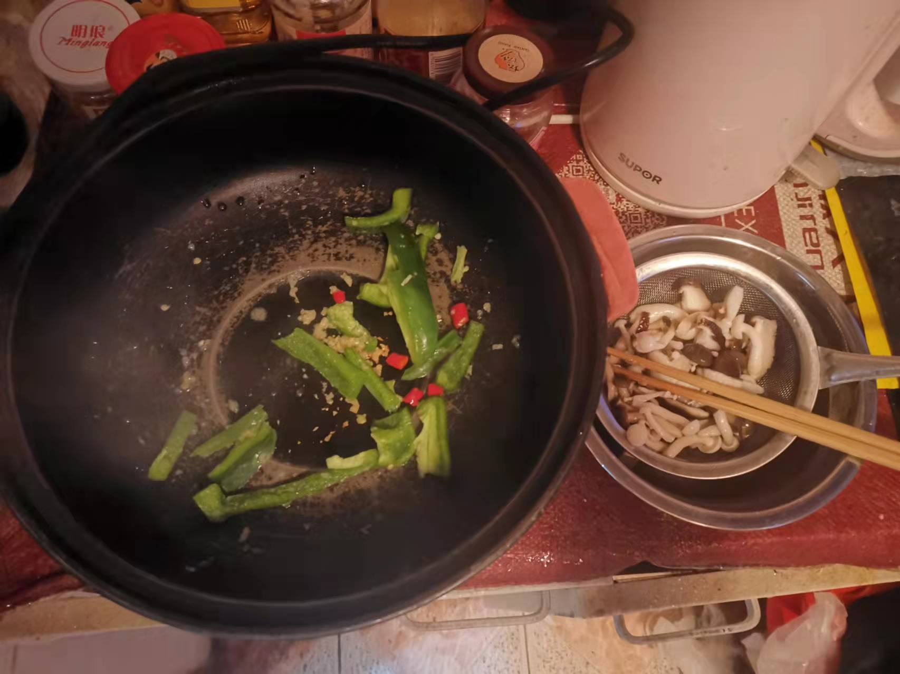
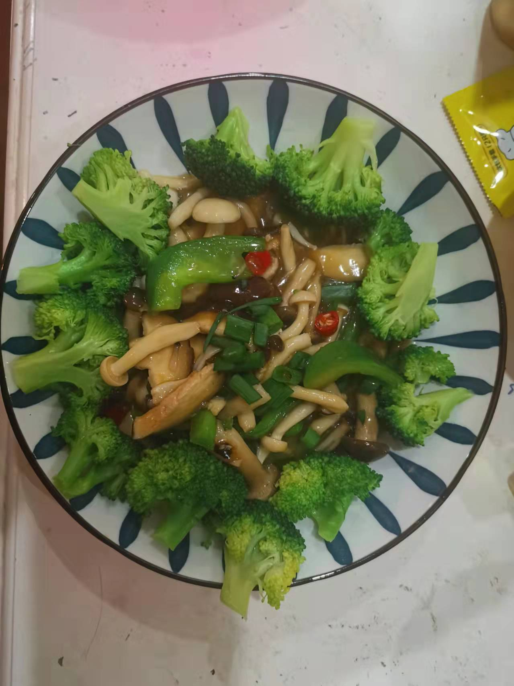

蚝油三鲜菇的做法
几分钟就能做出的蚝油蘑菇，滑嫩入味鲜美可口，别提多好吃了。
预估烹饪难度：★★★
必备原料和工具
- 香菇
- 蟹味菇
- 白玉菇
- 小米辣
- 菜椒
- 食用油
- 盐
- 料酒
- 淀粉
- 生抽
- 鸡精
- 香葱
- 姜末
- 蚝油
- 西蓝花
计算
每份：
- 鲜香菇 2 朵
- 蟹味菇 30 g
- 白玉菇 30 g
- 小米辣 1 根
- 菜椒 0.5 颗
- 食用油 10 ml
- 食用盐 5 g
- 料酒 2 ml
- 淀粉 10 g
- 生抽 10 ml
- 鸡精 3 g
- 香葱 0.5 根
- 姜末 1 粒
- 蚝油 5 ml
- 开水 350 ml
- 西蓝花 100 g
操作
- 蟹味菇、白玉菇 去掉根部泥土，掰散菌朵
- 香菇切片（每片厚度 0.5-1 cm，厚点相对薄点更有嚼劲）
- 生粉倒入小碗中，加入 50ml 水，搅拌生粉直至融化没有颗粒（即水淀粉）备用
- 水开，放入西蓝花，清水煮 3 分钟，放入碗中备用
- 洗锅烧开水，加入 5 g 食用盐，倒入蟹味菇、白玉菇、香菇，水煮 1 分钟
- 1 分钟后，捞出沥干水分
- 起锅烧油，待油开始冒小泡，放入姜末、小米辣、菜椒 煸炒 30 S
- 倒入三鲜菇，然后依次倒入生抽、蚝油、鸡精，翻炒均匀后，倒入水淀粉
- 中火烧干汁，加入料酒、葱花 出锅
- 摆上西蓝花
 
附加内容
如果您遵循本指南的制作流程而发现有问题或可以改进的流程，请提出 Issue 或 Pull request 。